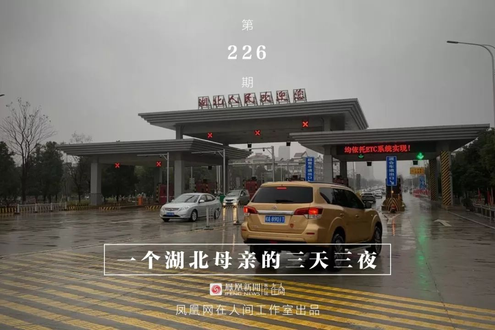
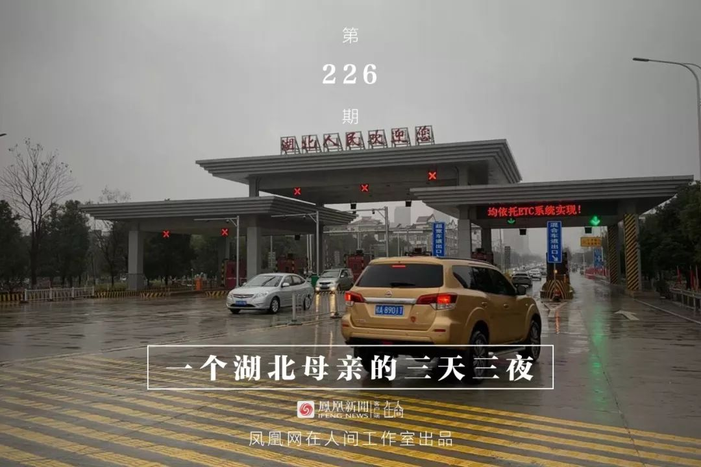
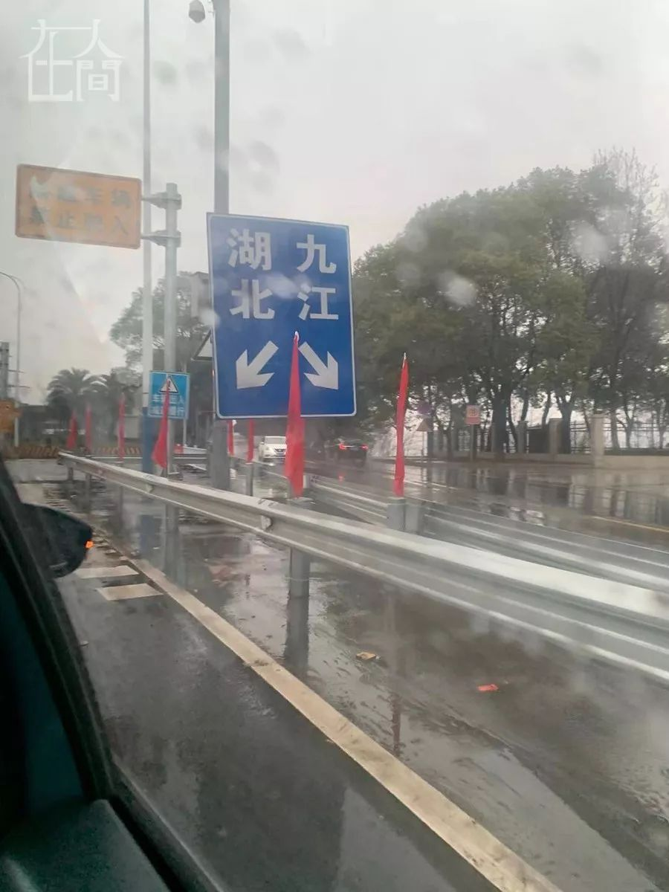

迟到的农村防疫：1个鄂西村医，44名武汉返乡人，来不及测的体温
原文链接 备份链接 鄂西乡间，村里开始贴上有关疫情的通告。向思琦摄 全文共*3498*字，阅读大约需要*7*分钟。 在武汉之外的湖北农村，1月23日，才是众多村民意识到疫情严重的“关键日”。在那天，武汉开始“封城”。 与突如其来的巨大 …
 

离开湖北境内的时候，我百感交集。我的父母和亲友还在那里，他们将会面临什么，谁也不知道。
作为一个去过疫区、带着孩子又成功离开的湖北人，我有责任把这几天的历程客观记录下来，希望能够给诸多还在恐慌中的人多少一些参考意义。
我老家在湖北黄梅，毗邻安徽和江西，是三省交界之地。父母不喜欢在大城市居住，几年前就回到故乡。有熟悉的朋友，家里居住条件也很好，我妈甚至在自家院子里开辟了两块菜地，所产蔬菜除了自给自足外还能送些给亲朋。去年，她专门将一块地种植了一些芝麻、花生之类的农作物，收获甚丰。春节前，她还特地亲手制作了芝麻酥，备着我和哥哥回家吃。为了这次春节，家里囤积了很多的米粮肉食，最初是想着我和哥哥两家人回去，多多益善，没想到，现在却成了抗击疫情最有用的物资了。
第一天 从深圳独自返回湖北
1月22日，我独自从深圳返乡，坐的是高铁G633，终点站是九江。按照常规，到达九江后距离老家还有一个小时的车程。
出发前，我做好了充足的准备：一盒医护外科口罩、一盒N95口罩，外加一袋日本产的儿童口罩，还有免洗消毒液、医用消毒湿巾等。儿童口罩是我给8岁的儿子准备的，他放寒假后，我把他送回了老家。本来我们计划一家四口从深圳回湖北老家过年，但现在一切计划都泡汤了。两个老人一个幼儿，他们的状况究竟如何？是否做好了防护？这些担忧让我几天来都坐卧不安。
从深圳到九江，高铁长达近七个小时，又是密闭空间，所以我计划路上不吃东西，尽量在出发前填饱肚子。这个时候疫情已经很严重了，但我相信，做好防护就无需太过紧张，也能最大程度保护好自己。

深圳北站，返乡的人还是很多，我乘坐的这趟高铁目光所及，座无虚席，几乎大部分人都戴着口罩。我左边是一个从香港返乡的年轻人，右边是一个头发染得很fashion的年轻人，从路途中的电话可以做出判断，左边的年轻人是江西的，右边的那个年轻人则是我老乡。所有人都没有攀谈的兴致，几乎都在埋头刷手机。乘坐这趟高铁若干年来，这是我经历过的最安静、最压抑的车厢。

一路无话，晚上23:16，火车抵达九江站。外面虽然下起了小雨，还是有很多接站的人，但只有少数人戴了口罩。我黄梅的同学再三表示要来接我，被我婉拒，一是时间太晚，二也是避免有风险。一路的信息互动中我发现，这个时候对疫情高度紧张的都是媒体的朋友，其他行业的朋友相对都还比较平静，持观望态度。
第二天 大年二十九的故乡异常安静
1月23日清早，刚起床就发现重大新闻：武汉封城了！情况越来越严重，也让人心情愈发沉重。我意识到，此前瞒报带来的恶果正在逐步呈现。

上午，居住在九江的儿时好友开车送我回家。她说目前九江戴口罩的人很少，包括她自己家，虽然有很多口罩，但还是不太习惯戴。汽车一路从九江进入湖北境内，大概因为下雨天气太冷，外面的人并不多，一路只见到了两个人戴口罩，一个是老奶奶，还有一个是骑着电动车的女子。
顺利到家后，我首先了解情况，幸运的是，家人的身体都很健康。相邻有好几家都是从武汉回来的，好在没有人有得病的迹象。在我们这里的小地方，一个人生病是瞒不住的，很快就会传到各家各户。我妈说，前两天因为我的夺命连环call，她已经很警惕，把家里前后门都给关上了，平时也没有来往。
至于戴口罩的问题，我爸向我展示了一下他外出的装备，居然是双层，里面是一层一次性的医用口罩，外面还有一层是我给们购买的防雾霾口罩，产自台湾，透气性还比较好。这让我倍感欣慰，深觉这些天的努力没有白费。
本来黄梅的同学说趁我回家要聚一下，我们应该是有超过十年以上的时间没有见面了。这些老同学目前都是地方教育系统的骨干，有机会我是想好好请教一下基础教育阶段父母应该注意的相关问题。但因为不断滚动和愈发严重的疫情态势，我还是取消了这次聚会，改为在家里睡觉，调整一下连日奔波已经无比疲累的身体和神经。
1月23日下午五点，睡了一觉起来，发现朋友给我发信息，说黄冈也封城了。疫情的局势简直是以小时计算在不断发生变化。与疫情相对应的是，几乎所有机构都迅速响应起来了，深圳的学校老师在群里迅速发了通知及统计信息，同时我也收到公司HR发来的信息，要统计湖北籍员工的返乡情况。
网络信息不停滚动，武汉的局势越来越严重，各种谣言也趁机涌现，让人无法平静下来。但在我家乡的这一块小小的土地上，一切都显得很平静。这里远离集市和人群，周围是广袤的田野，步行走到最近的小镇都需要至少半小时的路程。晚饭时分，家家户户亮起了灯光，甚至有人在家放起了烟花。这其实就是最为普通不过的乡村日常，但放在大年二十九，就显得尤为不同了。往年的春节，除夕前的一天必定到处都是热闹的，外地返乡的车辆也会停满周边，更别提会有很多孩子的欢声笑语。但今年的春节，安静才是主色调。这抹安静里透着底层百姓惶惑不安的脸，他们只知道，大祸来了，但不知道为何会这样，又是谁带来的。
1月23日晚，这是我这么久以来在老家住的第一晚，按照惯例，家人一起打牌，因为哥哥缺席，今年就由我儿子填补空缺。我一边打牌，一边给家人科普这次疫情的由来及进展，我爸说，他们那个退伍军人群里还有转发文章，说这是美国的生化武器带来的，还有一些人说什么因果报应论之类的。他们那些老年人群里，有那么多分析疫情由来的，但没有一个是谈到疫情怎么会突然爆发的。我说是因为可能有人之前隐瞒了真相，并延迟汇报疫情，相关专业机构介入已经迟了，又因春运人口大流动才导致疫情大爆发不可控。
儿子这个时候插话说：“他们为什么要隐瞒呢？他们不知道这样会很严重吗？”一个小学生都能想到的问题，我也不知道为何有些武汉人却想不到。
1月23日晚，我所在的黄冈同学群里开始有了各种通知，大部分是封城之后的升级措施。以往非常热闹的同学群，这一晚除了偶尔转发一些通知，居然没有人讨论事件了。除了感同身受越来越严峻的疫情，让人心情越来越沉重外，可能大家也的确不知道该说什么好了。
就在这一天，浙江、广东和湖南陆续启动重大突发公共卫生事件一级响应，但疫情最严重的湖北省却依然没有启动。
晚上，常居九江的发小发来信息，说她返回九江的时候，发现湖北通往九江的高速路口封了不少，只有一条路留着，但所有湖北车辆都必须要进行检查。这让我意识到，下一步会有重大变化。
第三天 除夕夜离开湖北 最伤感的一个年
1月24日吃完早饭后，我和儿子戴上口罩，决定出门看看情况。我们来了三伯家，三伯之前也在武汉，他回来的时间比较早，之前一直说武汉肺炎的事是有人造谣。这天早上看到我后，他却开始滔滔不绝讲到自己是如何幸运，早些离开了武汉。他给武汉的七叔打电话，唏嘘不已，说“武汉已经是一座死城了，老七说他晚上出门只听到猫狗叫，没有听到任何人声”。三伯不把这个叫武汉肺炎，他称之为“人瘟”，说是一些人带来的，将会有报应之类。看到他这么恐慌，我问他家里口罩是否备好了，他又开始骂我堂弟“在外打工一年，回来一分钱也没给家里，网上玩游戏一个月玩去了六千多块，现在就连口罩都没买一个”。
回到家里后，中学同学打来电话，告诉我九江关口依然可以通行，只是要停车查体温。我松了一口气，计划明天一早就赶紧出发，带孩子返回深圳。
今天是大年三十，妈妈正在做年夜饭，爸爸则忙着挂灯笼、贴对联和年画。尽管，春节联欢晚会的准备工作还在照常进行中，但家里没有人打开电视，此时网络上刷屏的是《武汉医院请求紧急支援！》，我所在的华科校友群里发出了向社会各界征集捐赠防护物资的通知公告，有一些校友已经积极行动起来，联络各方资源，希望能够力所能及，帮到那些在一线奋战的医护人员。
中午时分，湖北省终于启动了重大突发公共卫生事件一级响应。很快，有朋友给我发来了湖北天门的封路通知。出于直觉，我下决心，马上收拾东西，吃完年夜饭就出发，提前返程。
考虑到家中的物资储备及来回奔波的风险可能会更大，父母坚决表示要在家。我迅速将我和儿子的东西打包好，尽量轻装上阵。
放完鞭炮后开始吃年夜饭，互赠红包。我对父母的祝福不多，就希望他们健健康康，平安幸福。这个年，相信大部分中国人都是一样，如果说去年大家的愿望都是发财，今年一定都是健康。
天快黑的时候，堂弟开车送我和儿子去九江。父母挥手送别，天又下起了雨，这真是最让人伤感的一个除夕夜。
一路上，夜空中不断有烟花升起，这提醒我，这真的就是中国最隆重的一个夜晚，可我却带着儿子奔波在路上。
驶过九江长江大桥后车速减缓，一排车都在等待检查。路边三个穿着制服的工作人员，每个人手上都拿着一个电子体温计，挨个为车上人测体温。体温正常的才能顺利通过。我们的车顺利通过，堂弟将我送到酒店后就要赶去药店再返回老家，希望他能顺利买到口罩。
坐到酒店的床上时，我才意识到，自己是真的顺利离开湖北了。但我的父母还有很多的亲戚朋友依然在那里，他们会平安度过去的吧，我也只能这样安慰自己。
除夕夜，晚八点，在酒店的房间，打开电视，春节联欢晚会正在进行时，一片欢声笑语，国泰民安的大好盛世景象。实在看不下去换到别的台，正在播放伊朗的文明，儿子看得津津有味，纪录片说，他们的历史悠久，留下了许多璀璨的文明，作为历史上的丝绸之路的重要地标，和中国联系紧密。纪录片呈现的伊朗是那么繁华和富足，儿子问，这是历史上的波斯吗？我说是的。他又问，这里面放的是现在的伊朗吗？我摇了摇头说，不是。
后记：
从九江回深圳的高铁上，我和儿子同样是全程口罩，甚至我都提前和他说好了，忍住不能在高铁上吃东西，他也做到了。我们可以确保自己当下是健康的，但防护工作依然要做好，这是为自己负责，也是为他人负责。回到深圳后，我们也及时按照社区要求提供了出行信息，并配合相关检查，目前我和儿子在家进行隔离观察。
1月25日，听说九江不允许湖北的车辆通过了，甚至有湖北人走路过去都会被要求返回，这和之前某省的做法是一致的，就是封锁住湖北，不让任何人进入到自己的地界。这种做法虽然说是站在疫情的角度考虑，但却是在制造恐慌，也是毫无人道主义的举措，这更是一种懒政。这种懒政已经让武汉成为了最大的受害者，前车可鉴。
而对于没去过武汉更不存在有任何症状的人来讲，更没必要人为恐慌。只要自己的防护措施做好了，病毒轻易不会找上你。但如果你因此敌视武汉人、湖北人，甚至进一步扩大这种敌视效应，那么试想一下，当下一次同样的灾难来袭时，谁会向你伸出援助之手？
或许有人会质问我为何要匆忙离开湖北？我的确是因为恐慌，本能想要带着孩子去更安全的地方，带他回到自己的家。但令我真正恐慌的并不是肺炎，我恐慌的是整个事件在无法预料的情况下发展，而掌控着事件导向的背后，那双有力的手并没有给湖北人民带来任何安全感。我恐慌的不是已知的事实，令我恐慌的是未知的进展。


新型肺炎疫情牵动人心，
《在人间》现面向全国网友征稿：
主题一：疫区影像日记
如果你身处疫区
请你用照片（视频）和文字记录
你所听闻和见到的一切
照片不少于3张
文字不少于300字
主题二：口罩全家福
请你拍下一家人戴口罩的合影
并注明拍摄时间、地点
另简述过年经历
不少于200字
投稿方式：微信联系人间君（zairenjianliving）

原文链接 备份链接 鄂西乡间，村里开始贴上有关疫情的通告。向思琦摄 全文共*3498*字，阅读大约需要*7*分钟。 在武汉之外的湖北农村，1月23日，才是众多村民意识到疫情严重的“关键日”。在那天，武汉开始“封城”。 与突如其来的巨大 …
原文链接 备份链接 作者 | 王晓 出品 | 棱镜·腾讯小满工作室 欢迎下载腾讯新闻APP，阅读更多优质资讯 对于湖北人民来说，2020年的这个除夕夜太不平常了。 “药店大姐告诉我们，口罩绝不涨价，不发国难财，而且告知我们第二天早7点开 …
原文链接 备份链接 这注定是一个难捱的春节。 截至1月23日24时， 全国确诊新型肺炎病例830例， 死亡25例。 截至1月23日晚，中国新型肺炎疫情地图（来源：丁香医生） 同时，国际确诊案例也陆续出现。 截至1月23日，数据如下： 泰 …
原文链接 备份链接 离汉通道关闭的前一天|图片报道 2020-01-23 07:22 作者：王迎春 来源：中国经营网 本报记者王迎春 武汉报道 1月22日，武汉首次披露肺炎疫情后第23天，湖北省、武汉市两级政府自21日起集中发布关于疫情防 …
原文链接 备份链接 文 | 王彦入 王丹妮 程静之 殷盛琳 李晓芳 周航 叶雯 曾宪雯 编辑 | 王珊 陶若谷 33岁的刘科戴上两层口罩独自走进地铁，夹杂在路人中间。像他这样拉着行李箱的人并不少见，彼此间默契地保持着距离。三天前，他刚刚从 …